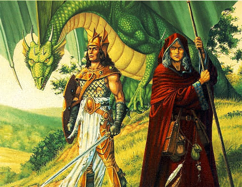

In Sweden, centuries ago, the queen lay in her bedchamber about to give birth to twins—the fulfilment of many years of empty longing for the children she had seemed destined never to conceive. She smiled as she recalled how she had consulted a soothsayer, who had assured her that in less than a year she would be granted two handsome sons, provided that she ate two fresh onions as soon as she returned to the palace.
Although this advice had seemed quite bizarre, the queen had been so aroused by the chance it offered her that she had rushed away, ignoring the voice of the soothsayer calling after her. Arriving back home, the queen had ordered two crisp onions to be brought to her at once.
The queen was so excited by the promise the onions held that she ate the first one without stopping even to peel the skin from it. Not surprisingly, it tasted disgusting and so, in spite of her enthusiasm, she spend time carefully peeling the second one, stripping away every layer of skin before eating it. Nine months had passed since then, and now, precisely as foretold by the soothsayer, her greatly desired sons were about to be born.
Outside the royal bedchamber, the courtiers and the palace staff were eagerly awaiting the official announcement of the birth of the new princes. Suddenly, an ear-splitting scream echoed within the chamber. But it was not the lusty cry of a newborn baby; it was, instead, a shriek of horror, a wail that sprang from the throat of the royal midwife when she set eyes upon the queen's first child. It was a male - but it was not human.
The queen had given birth to a lindorm, a hideous, snakelike dragon, whose wingless body thrashed upon the marble floor in scaly coils, and from whose shoulders sprang a pair of powerful limbs with taloned feet. So repulsed by the creature that she was unable even to whisper, let alone scream, the queen leaned down, took the young lindorm in her hands and hurled it through the window into the dense forest surrounding the palace. Weakened from the exertion, the queen sank back upon the bed and gave birth again, this time to a perfect healthy, fresh-faced boy, with golden hair and sparkling blue eyes.

Years passed, and the boy became a youthful prince in search of a bride, but what he found was his brother, the lindorm. The prince was riding around the edge of the vast forest encompassing the palace when, without warning, a huge head emerged from a thorny bush directly in front of him. Rearing up until its green-scaled body resembled a towering tree, the lindorm gazed down at the youth with unblinking amber eyes that penetrated his innermost thoughts. And as the prince stared back, mesmerized and motionless, he heard its voice assuring him with cold, reptilian detachment and certainty that he would never find a wife until he, the elder brother, had obtained the true love of a willing bride.
Accordingly, over the next few months a succession of village maidens was given to the lindorm in the hope of overcoming this barrier to the young prince's quest for a bride. Needless to say, none of the maidens came willingly, however, and so none was accepted by the monster. The situation seemed irredeemable, until the next maiden selected to be the bride of the lindorm had the good fortune to encounter the same soothsayer whom the queen had consulted so many years before. After listening while the maiden spoke of her impending plight, the soothsayer whispered into her ear a few words that swiftly replaced her sadness with a smile of delight.
That night, the maiden was presented to the lindorm, who gruffly told her to take off her dresses, of which she seemed to be wearing a surprising number. She agreed to do this, but only after extracting from the lindorm the promise that for every dress she took off, it would shed a layer of skin. This it did, until only one remained, and until the maiden was clothed in just a single simple garment
Despite remembering the soothsayer's words, it was not without nervousness that she removed this final gown and stood naked before the great dragon. The lindorm moved toward her, and the maiden tensed - fearing, yet also desiring, what was to come, for if the soothsayer had spoken truthfully there would be great happiness and great love ahead. And so she stood erect and motionless as the serpentine monster leisurely, almost tenderly, enveloped her body in its scaly coils. She had expected them to feel cold and slimy, but was pleasantly surprised by their warmth and softness when they embraced and caressed her. Even so, she felt a flicker of terror rising within her and desire to flee. Then the words of the soothsayer came back into her mind, calming her, and she relaxed again.
Gazing about, she noticed that the lindorm's last layer of skin, so thin as to be almost translucent, was starting to peel away, folding back upon itself like a cluster of withered leaves. At the same time, a strange green mist manifested itself, enveloping the lindorm, until she was aware of its presence only by the embrace of its sinuous body. Gradually the mist dispersed and revealed that she was no longer wrapped within the serpentine coils of a lindorm, but held in the firm arms of the most handsome man she had ever seen.
The soothsayer had indeed spoken truthfully. By following her instructions, the maiden had dispelled the enchantment that had incarcerated him within the body of a lindorm, and here was the elder prince, heir to the throne, for whom she would certainly be a willing bride.
The joyful marriage took place without delay, and after the old queen had given her blessing to the newlyweds, now the king and queen, she felt a light tap on her shoulder. It was the sootsayer, who revealed the information the queen had not stayed to hear all those years ago—to be sure to peel both onions before eating them.